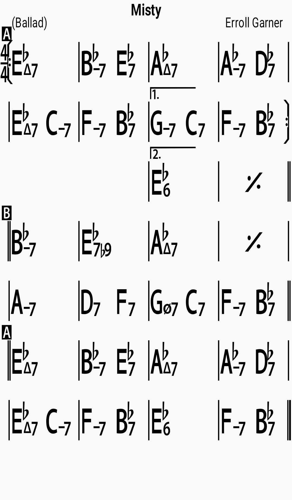

Chords

Lyrics
Look at me, I'm as helpless as a kitten up a tree; And I feel like I'm clingin' to a cloud I can't understand I get misty, just holding your hand Walk my way And a thousand violins begin to play Or it might be the sound of your hello That music I hear I get misty, the moment you're near Can't you see that you're leading me on? And it's just what I want you to do Don't you notice how hopelessly I'm lost That's why I'm following you On my own Would I wander through this wonderland alone Never knowing my right foot from my left My hat from my glove I'm too misty, and too much in love